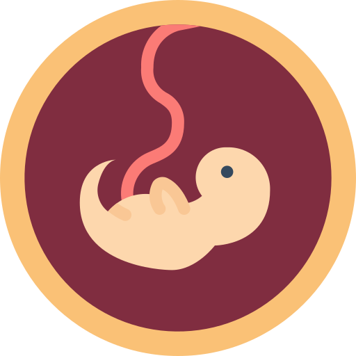

Generalidades del Embarazo
El embarazo es el estado fisiológico de una mujer que comienza con la concepción del feto y continúa con el desarrollo fetal hasta el momento del parto. Este período se divide en 40 semanas y dura 280 días, aproximadamente. Aun así, en condiciones especiales el parto puede tener lugar antes del término previsto, conocido como parto prematuro, o después de dicho término. Para que ocurra un embarazo, un espermatozoide debe unirse con un óvulo. El embarazo comienza oficialmente cuando un óvulo fecundado se implanta en el tejido que cubre el útero (la pared del útero). Después de tener relaciones sexuales, se tarda de 2 a 3 semanas para que el embarazo ocurra.
Todo comienza con los espermatozoides y un óvulo, cuando un espermatozoide se une con un óvulo, esto se llama fertilización. Sin embargo, la fertilización no sucede de inmediato. Como los espermatozoides pueden permanecer en el útero y trompas de Falopio hasta 6 días después de haber tenido relaciones sexuales, pueden pasar hasta 6 días entre el sexo y la fecundación. Si un espermatozoide se une con un óvulo, el óvulo fertilizado se mueve por la trompa de Falopio hasta tu útero. Luego, comienza a dividirse en más y más células, y forma una bola a medida que crece. Esta bola de células (llamada blastocito) llega a tu útero entre 3 y 4 días después de la fertilización.
Síntomas

FALTA DE MENSTRUACIÓN
MAMAS O PEZONES HINCHADOS Y SENSIBLES
NAUSEAS CON O SIN VOMITO
FATIGA
DOLOR DE CABEZA
.png)
CAMBIOS DE HUMOR Y EN EL ESTADO DE ÁNIMO

ESTREÑIMIENTO
INCREMENTO DE LA FRECUENCIA DE MICCIÓN
HINCHAZÓN
LEVE MANCHADO
CALAMBRES

CAMBIOS ALIMENTARIOS
¿Qué es la Edad Gestional?
El término “edad gestacional” quiere decir el tiempo que tienes de embarazo. La edad
gestacional se cuenta a partir del primer día de tu último periodo menstrual (UPM).
La edad gestacional puede ser un poco confusa, porque mide el embarazo desde el último
periodo,
alrededor de 3 o 4 semanas ANTES de que se produzca el embarazo. Se considera que el
embarazo dura 9 meses, y es cierto que usualmente tendrás un embarazo de más o menos de 9
meses.
Sin embargo, la forma en que se mide el embarazo hace que sea un poco más largo. Un embarazo
a
término típico dura entre 38 a 42 semanas desde el último periodo (alrededor de 10 meses).
Se referencian segmentos del embarazo, denominados trimestres. A continuación
se
describen los principales acontecimientos de cada trimestre:
 Los acontecimientos que conducen a un embarazo comienzan con la concepción, en la cual un espermatozoide penetra un óvulo. Luego, el óvulo fertilizado (denominado cigoto) viaja a través de las trompas de Falopio de la mujer hasta el útero, en donde se implanta en la pared uterina. El cigoto está formado por un conjunto de células que luego forman el feto y la placenta. La placenta conecta a la madre con el feto y le proporciona nutrientes y oxígeno al feto, la madre puede experimentar síntomas como náuseas, irritabilidad, cansancio y agrandamiento de las mamas. Entre la semana 8 y la 13 comienza a cambiar el cuerpo de la futura madre y se diferencian los órganos sexuales del feto, cuyas cuerdas vocales también se formarán. En este punto, termina el período más crítico del embarazo, en el que hay un alto riesgo de aborto y daños al feto: así es como comienza el segundo trimestre de gestación.
De la semana 13 a la 17 disminuirá la fatiga y las náuseas tenderán a desaparecer, mientras el feto está completamente formado. De la semana 17 a la 21 la madre comenzará a sentir los primeros movimientos del bebé, entre la semana 21 y la 26 el vientre empezará a ser bastante grande y podrá sentir las primeras contracciones uterinas. En este mes el bebé duplicará su peso, comenzará a abrir y a cerrar los párpados y empezará a hacer pequeños movimientos respiratorios
Entre las semanas 18 y 20, es el momento en el cual se realiza un ultrasonido para detectar defectos de nacimiento, a menudo se puede saber el sexo del bebé, a las 24 semanas, se forman las huellas de los dedos de las manos y de los pies, y el feto se duerme y se despierta regularmente. Según investigaciones de la Red de Investigación Neonatal del NICHD (Instituto Nacional de la Salud infantil y Desarrollo Humano Eunice Kennedy Shriver), la tasa de supervivencia para los bebés nacidos a las 28 semanas era del 92 %, aunque los bebés nacidos en ese tiempo probablemente experimenten complicaciones de salud serias, incluidos problemas respiratorios y neurológicos.
El bebé crecerá más y más y entre la semana 30 y la 35 el bebé comenzará a posicionarse lentamente en preparación al parto, la madre comenzará a sentir dolor en la espalda y el abdomen, así como contracciones uterinas más frecuentes, en el último mes de gestación (semanas 35-40) el feto alcanzará el desarrollo completo y por lo general se colocará en posición invertida, con la cabeza encauzada hacia la cavidad pélvica. Los bebés nacidos antes de las 37 semanas se consideran prematuros. Estos niños tienen mayores riesgos de tener problemas como retraso en el desarrollo, problemas de visión y auditivos y parálisis cerebral. Los bebés nacidos entre las semanas 34 y 36 se consideran prematuros tardíos. Los bebés nacidos en las semanas 37 y 38 del embarazo, previamente considerados a término, ahora se consideran a término temprano. Estos bebés enfrentan más riesgos de salud que los bebés que nacen en la semana 39 o después, lo cual ahora se considera a término.
El Parto, es el momento en que el niño es expulsado del cuerpo de la madre, puede tener lugar de diferentes maneras:
- Parto natural: Se produce de manera espontánea, y la madre da a luz al niño naturalmente.
- Cesárea: Se realiza cuando el bebé está en posición podálica, en caso de placenta previa, cuando hay sufrimiento fetal o en caso de embarazo gemelar, cuando ha habido intervenciones uterinas previas y si hay riesgo para la salud de la madre o del bebé. Podrá programarse o ejecutarse con carácter de urgencia.
- Parto inducido: Si pasan dos semanas desde la fecha de parto prevista o si hay riesgo para la salud del bebé y de la madre, el parto se induce manualmente o mediante la administración de oxitocina y epidural.
Embarazo Adolescente
.jpg)
Según la Organización Mundial de la Salud (OMS), la adolescencia es el período en la vida de una persona que comprende entre los 10 y los 19 años. En algunos casos la adolescencia se ve interrumpida cuando la joven se queda un embarazo. Y es que, una de cada cinco mujeres en el mundo ya tiene un hijo antes de los 18 años y cada año se producen 16 millones de nacimientos de mamás adolescentes. En las regiones más pobres del planeta a una de cada tres mujeres son madres en la adolescencia. En Colombia, una de cada cinco adolescentes entre 15 y 19 años ha estado alguna vez embarazada. De éstas, el 16% ya son madres y el 4% está esperando su primer hijo. El 13% de las mujeres menores de 15 años ya ha iniciado una vida sexual activa.
Las mujeres con menor educación inician en promedio a los 15 años, mientras que las de más educación lo hacen a los 18 años. Los adolescentes no tienen hijos con otros adolescentes, de acuerdo con la información que reporta el DANE, sólo el 0.8 % de los adolescentes tienen relaciones con otros adolescentes. El restante, 99.2%, tienen hijos con mayores de edad.
Según los expertos, la edad más apropiada para ser madre es entre los 20 y los 35
años, ya que el riesgo para la salud de la madre y el niño es mucho menor.
El
embarazo en la adolescencia se considera de alto riesgo y conlleva más
complicaciones. La adolescente no está preparada ni física ni
mentalmente para tener un bebé y asumir la RESPONSABILIDAD de
la
maternidad.
Las adolescentes que se quedan embarazadas presentan en muchos casos:
- Cuadros de mala nutrición, con carencia de nutrientes esenciales para el buen desarrollo del bebé.
- Un mayor número de abortos espontáneos.
- Partos prematuros, hay un gran número de bebés de adolescentes que nacen antes de la semana 37 de gestación.
- Sus bebés tienen un peso bajo ya que la inmadurez de su cuerpo hace que su útero no se haya desarrollado completamente
- Las mamás adolescente tienen niños con más problemas de salud y trastornos del desarrollo.
- En los casos de embarazos de niñas de menos de 15 años, el bebé tiene más posibilidades de nacer con malformaciones